Part III · Modeling of Viscoelasticity with the Lattice Boltzmann Method — Chapter 4
Numerical Simulations
The “viscoelastic lattice Boltzmann fluid” was designed starting from the idea of giving a long relaxation time to modes related to the viscous stress tensor. This clearly creates a memory effect. At this stage of the study, we do not have any justification for considering one constitutive equation rather than another, and our choice is made by trial and error. In the same way as the experimentalist, we find ourselves confronted with a fluid whose characteristics we have to determine.
As we have seen throughout this thesis, the name of Jeffreys has appeared several times, and it is not revealing a great secret to announce that the working hypothesis we will adopt is that the fluid simulated by our method is a Jeffreys-type fluid. It indeed seemed natural to think of such a fluid based on the preceding chapters. In fact, the introduction of an infinite viscosity in a method which, already through the solutions of the dispersion equation, clearly showed the existence of a complex viscosity, hence a time-dependent one, pointed toward the Jeffreys fluid.
To study our fluid, we will set up several types of simulations. The first type will allow the study of the presence of transverse waves. This will let us measure the various transport and attenuation coefficients of our fluid. Next, we will consider simulations in which temporal effects dominate. We will attempt to quantify its characteristics, first for forced flows. Then, in a second step, we will study the characteristics of our fluid for flow cases in which the transient state dominates.
Since our fifteen-velocity model in two dimensions is the most advanced of all, it is the one we will use throughout the rest of this chapter.
4.1 Relaxation of a wave
In the classical Navier-Stokes equations, represented by equations (4.1) without thermal effects, one can distinguish, in two dimensions, three sinusoidal modes, namely two for the sound waves and one for the shear waves.
\[\begin{eqnarray} \label{NStokes-simu} &&\partial_t\rho+{\mathbf{\nabla}} . \,{\mathbf{j}}=0\\ &&\partial_t\,{\mathbf{j}} + {\mathbf{\nabla}} . ({{\mathbf{j}}:{\mathbf{j}}\over \rho})=-{\mathbf{\nabla}} P + {\mathbf{\nabla}}.(\nu\,{\mathbf{\nabla}} {\mathbf{j}})+{\mathbf{\nabla}}(\xi\,{\mathbf{\nabla}}.\,{\mathbf{j}}), \end{eqnarray}\] where \({\mathbf{j}}=\rho\,{\mathbf{u}}\) represents the momentum, \(\nu\) and \(\xi\) denote respectively the shear viscosity and the bulk viscosity. As we have already seen previously, the solutions of the dispersion equation give, for the shear mode, as a function of the wave number \(k\), \[\begin{equation} \omega=-\nu\,k^2, \end{equation}\] and for the longitudinal (or sound) modes \[\begin{equation} \omega=\pm c_s\, k-\Gamma\,k^2, \end{equation}\] where \(c_s\) denotes the speed of sound in the medium and \(\displaystyle\Gamma={\nu+\xi\over 2}\) the longitudinal attenuation of sound waves.
4.1.1 Quasi-elastic model
The addition of two macroscopic equations corresponding to the two new conserved quantities, in the quasi-elastic case, leads to the consideration of five sinusoidal modes: two for the sound waves, two for the propagative transverse waves, and finally a last non-propagative mode with no physical meaning, apart from the fact that it has characteristics of a thermal mode, that is, it is purely diffusive. We recall that a transverse wave is “a wave whose velocity \(v=c_\perp\) is directed perpendicular to its direction of propagation” [40].
Indeed, if we take up the dynamical equations we had deduced from the Chapman-Enskog expansion of the fifteen-velocity model in the quasi-elastic case, by eliminating the nonlinear terms in \(j\), we obtain \[\begin{eqnarray} \label{cont-sim} &&\partial_t\rho + \partial_xj_x+\partial_yj_y=0,\\ \label{NSx-sim} &&\partial_tj_x+\partial_xP+ {c_\perp^2 \over \kappa}\,(\partial_xP_{xx}+\partial_yP_{xy})\nonumber\\ &&\qquad=\nu_\infty\,\Delta j_x+\xi_\infty\,\partial_x(\partial_xj_x+\partial_yj_y),\qquad\qquad\\ \label{NSy-sim} &&\partial_tj_y+\partial_yP+ {c_\perp^2 \over \kappa}\,(\partial_xP_{xy}-\partial_yP_{xx})\nonumber\\ &&\qquad=\nu_\infty\,\Delta j_y+\xi_\infty\,\partial_y(\partial_xj_x+\partial_yj_y),\\ &&\partial_tP_{xx}+ \kappa\,(\partial_xj_x-\partial_yj_y) = D_\infty \,\Delta P_{xx},\\ \label{viscom-sim} &&\partial_tP_{xy}+ \kappa\,(\partial_xj_y+\partial_yj_x) = D_\infty \,\Delta P_{xy}. \end{eqnarray}\]
Taking as initial condition a velocity wave, \[u({\mathbf{r}},0)=\left({\mathbf{u}}_{\|}+{\mathbf{u}}_{\perp}\right)\,\cos ({\mathbf{k}} \cdot {\mathbf{r}}),\] one can then determine the temporal evolution of the system, which is given by \[\begin{eqnarray} &&u({\mathbf{r}},t)=\left({\mathbf{u}}_{\|}\,\cos (\omega_{\|} t+\phi_{\|})/ \cos \phi_{\|}\, \,e^{-k^2 \alpha_{\|} t}\right.\quad \nonumber\\ &&\phantom{u({\mathbf{r}},t)} +\left.\phantom{\Big(}{\mathbf{u}}_{\perp}\,\cos (\omega_{\perp} t+\phi_{\perp})/ \cos \phi_{\perp}\, \,e^{-k^2 \alpha_{\perp} t}\right)\,\cos ({\mathbf{k}}\cdot {\mathbf{r}}),\quad \nonumber \end{eqnarray}\] where \({\mathbf{u}}_{\|}\) and \({\mathbf{u}}_{\perp}\) are respectively the velocity parallel and the velocity perpendicular to \({\mathbf{k}}\), and \[\begin{eqnarray} \omega_{\|}^2=(c_s^2+c_{\perp}^2)\,k^2, && \omega_\perp^2=c_{\perp}^2\,k^2,\label{omega1}\\ \alpha_{\|}= {1\over 2}\left(\nu_\infty+\xi_\infty+ {c_{\perp}^2 D_\infty \over c_s^2+c_{\perp}^2}\right),&& \alpha_{\perp}={\nu_\infty+D_\infty\over 2},\label{attenu1}\\ \tan (\phi_{\|})= {D_\infty-\alpha_{\|} \over \omega_\|}\,k^2, \,\qquad\mbox{and}\,&& \tan (\phi_\perp)= {D_\infty-\alpha_{\perp} \over \omega_\perp} \,k^2.\qquad\quad \end{eqnarray}\]
One can easily carry out this type of simulation for arbitrary angles between \({\mathbf{k}}\) and \({\mathbf{r}}\), an example of which is shown in figure 4.1 for a parallel wave and a transverse wave.
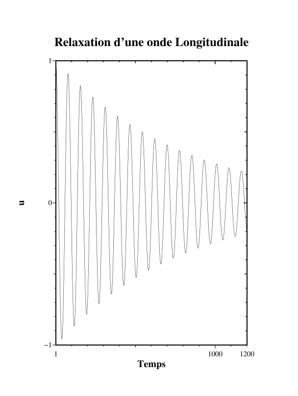
Given that the transverse waves correspond to the shear modes of the system, this justifies the name “quasi-elastic model”. This elastic behavior is visible in figure 4.1a; indeed, the relaxation of a transverse wave is sinusoidal whereas for a Newtonian fluid this relaxation would be exponential. This model is not purely elastic because the above sinusoid is damped. The comparisons between the measurements and the theoretical predictions are excellent; they differ by less than \(0.5\%\), and this regardless of the angle between \({\mathbf{k}}\) and \({\mathbf{r}}\). This confirms that our fifteen-velocity model is isotropic when the new modes are conserved \((\lambda_\gamma=0)\). The small errors observed are due to the fact that the isotropy of the model is ensured up to order \(k^2\), and that the corrections coming from higher orders are not necessarily isotropic.
4.1.2 Viscoelastic model
Performing the same type of simulation for the viscoelastic model, that is, when \(\lambda_\gamma\ll1\), we encounter two distinct cases. The first case arises when the wave number \(k\) is smaller than the value \(k_c\), which is the boundary between viscous behavior and viscoelastic behavior. We have already shown that \(k_c={\lambda_\gamma/ 2 c_\perp}\). If we take up the curve representing the imaginary part of the solutions of the dispersion equation, this situation appears when the wave number lies before the appearance of the transverse velocity; the behavior of the fluid is then elastic. Such a case leads to the viscous behavior of the fluid shown in figure 4.2.
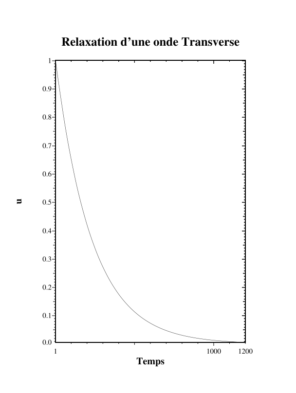
In the case where \(k>k_c\), we recover a behavior with a shape identical to that of the quasi-elastic model. This type of simulation allows us to measure the transverse wave speed as well as the longitudinal wave speed as a function of the angle between \({\mathbf{k}}\) and \({\mathbf{r}}\). This lets us observe that the transverse wave speed is no longer given by \(v_\perp=c_\perp\) as in the quasi-elastic case, but by \[\begin{equation} v_\perp=\sqrt{\lambda_\gamma\,\nu_0} \end{equation}\] with \(\nu_0\) the viscosity of the viscous model defined by \[\begin{equation} \nu_0=({\kappa\over 2}-c_{\perp}^2)\,({1\over \lambda_\nu}-{1\over 2})+ c_{\perp}^2\,({1\over \lambda_\gamma}-{1 \over 2}), \end{equation}\] regardless of the angle between \({\mathbf{k}}\) and \({\mathbf{r}}\). This value proves to be exact with very high precision; the relative error is less than \(10^{-4}\). We will see later that this value of the transverse speed can be deduced from the Jeffreys-type constitutive equation and yields the same expression as the one we have just found. The longitudinal wave speed is also obtained with the same order of precision and we then have \(v_\parallel=\sqrt{v_\perp^2+c_s^2}\).
In conclusion, these simulations confirm the isotropy of the quasi-elastic model and the extension of this isotropy to the viscoelastic model. They also allow us to find the values of the coefficients \(v_\perp\) and \(v_\parallel\) with significant precision.
4.2 Couette and Oscillating Couette Flow
We will now test the viscoelastic model in the presence of solid walls. These walls are of the back-bounce or Bounce-back type for all velocities, so care must be taken with velocities of norm two since they must feel the presence of obstacles at two sites away. We will first set up a Couette-type flow. We will therefore impose a velocity \(V_0\) on one of the two walls in order to simulate a Couette flow. To implement this type of boundary condition, we must bias the collision, at the points closest to the moving wall, by adding a small amount of momentum \(\delta F\) in the \(+x\) direction and subtracting the same amount in the \(-x\) direction at each iteration. It is then necessary to determine \(\delta F\) as a function of the parameters of the model and the velocity \(V_0\) to be imposed. For the present model, with fifteen velocities in two dimensions, it is easy to find the relation: \[\delta F={\kappa \over 2} V_0,\] with \(\kappa\) one of the parameters of the model.
4.2.1 Couette Flow
One can then test the validity of such a type of boundary condition by imposing, slowly in time, a velocity on the moving wall so as not to excite the elastic modes. In practice, we use a hyperbolic tangent to impose the velocity of the moving plate. If we wait a long enough time, the velocity profile becomes linear as for a classical viscous fluid. The equations issued from the Chapman-Enskog expansion give us an indication of the value of the components of the viscous stress tensor. We can then choose a priori: \[\begin{eqnarray} \sigma_{xx}={\nu_\infty \over \kappa}\lambda_\nu\,S^{(1)}_{xx}+ {c_{\perp}^2 \over \kappa}\left(1-{\lambda_\gamma\over 2} \right)\, P_{xx},\\ \sigma_{xy}={\nu_\infty \over \kappa}\lambda'_\nu\,S^{(1)}_{xy}+ {c_{\perp}^2 \over \kappa}\left(1-{\lambda_\gamma\over 2} \right)\, P_{xy}. \end{eqnarray}\] One can then measure the stress and verify its value against the theoretical stress: \[\begin{eqnarray} &&\sigma_{xx}=0\nonumber\\ &&\sigma_{xy}=-\nu_0\,{\dot D}_{xy}=-\nu_0\,{\partial V_x\over \partial y}=\nu_0\,{V_0\over H}. \end{eqnarray}\]
These last two relations are then verified to machine precision, which validates, at least for steady-state situations, the choice we made for the stress.
4.2.2 Oscillating Couette Flow
A classical simulation to determine the real and imaginary parts of the viscosity is the so-called oscillating Couette simulation, whose characteristics are given in chapter 1 of the previous part. In fact, it is a Couette flow in which the moving plate vibrates with angular frequency \(\omega\). We must now make a hypothesis on the form of the complex viscosity to be used. We will of course choose a Jeffreys model, which gives for the complex viscosity: \[\begin{equation} \nu^\star=\nu_\infty+{\nu_0-\nu_\infty \over 1+i\,\omega\,\tau_1}, \end{equation}\] with, as before, \[\begin{equation} \nu_0=({\kappa\over 2}-c_{\perp}^2)\,({1\over \lambda_\nu}-{1\over 2})+ c_{\perp}^2\,({1\over \lambda_\gamma}-{1 \over 2}), \end{equation}\] and \[\begin{equation} \nu_\infty=({\kappa\over 2}-c_{\perp}^2)\,({1\over \lambda_\nu}-{1\over 2}). \end{equation}\] The choice \(\tau_1=1/\lambda_\gamma\) seems quite natural, but this remains a working hypothesis.
We will measure the resonance curves in phase and in amplitude of the fluid velocity as a function of the angular frequency \(\omega\) at different heights in the channel. This yields figures 4.3 and 4.4 when comparing the theoretical solutions of the Jeffreys model with the numerical values. The theoretical solutions are plotted as continuous lines; the circles, squares, and other cross-shaped points are the solutions obtained from the numerical simulations. To carry out the simulation, our simulation domain is reduced to two sites in the \(Ox\) direction with periodic boundary conditions and 60 sites in \(Oy\) with bounce-back (bounce back) boundary conditions. To obtain reasonable precision, we restricted ourselves to 100,000 iterations, which represents approximately 2 minutes of computation per resolution point in the following graphs. We can observe excellent agreement between the simulations and the theoretical solutions, without any adjustable parameter.
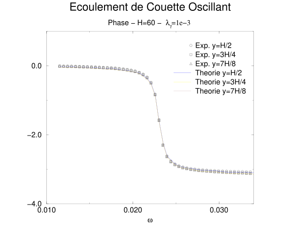
A resonance is observed at angular frequency \(\displaystyle\omega=\omega_0\approx\pi{v_\perp\over H}\).
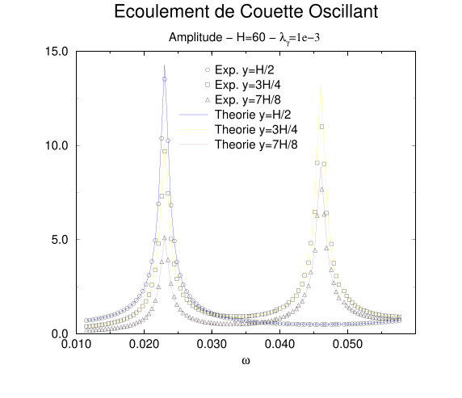
If we extend the range of angular frequency, we obtain the graph in figure 4.5 where there is a second resonance peak for the velocities that are not at the center of the channel. Indeed, the curve for the velocity at the center of the channel does not show a resonance at \(2\,\omega_0\).
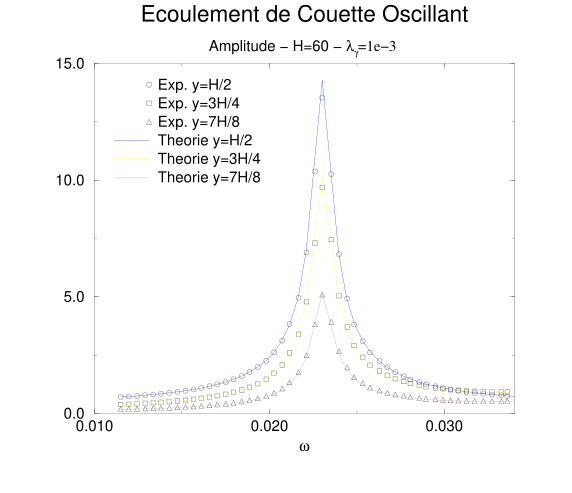
We can plot the error on the amplitude, in figure (4.6).
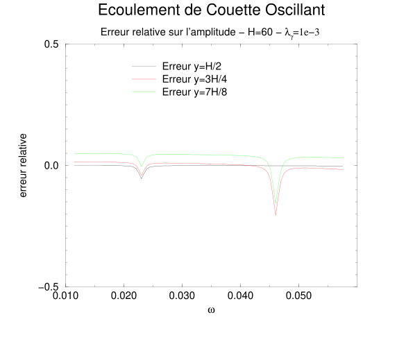
We can then observe that there are several different sources of error. The first one seems to be due to the walls, since the error grows as we approach the walls. One can indeed imagine, as in the case of a Newtonian fluid simulated with the lattice Boltzmann method, that the position of the wall varies depending on the eigenvalues of the collision operator. We will therefore be able to adapt the method presented in chapter 4 of the first part, which allows one to correct these effects, to the method presented here, in the future. The second source of error is at the resonance; the number of iterations is probably not sufficient to eliminate spurious effects that push us away from the maximum amplitude. It appears however that the hypothesis \(\tau_1=1/ \lambda_\gamma\) is good enough, because a small variation on \(\tau_1\) produces a strong variation on the error curve; typically, a \(1\%\) error on \(\tau_1\) doubles the error on the velocity at the first resonance. Nevertheless, it remains impossible to distinguish whether \(\tau_1=1/ \lambda_\gamma\) or \(\tau_1=1/ \lambda_\gamma-1 /2\). The last possible source of error comes from the fact that our fluid is not rigorously a Jeffreys fluid. We will see at the end of this manuscript a derivation that will let us deduce the constitutive equation of our fluid; it will have an additional term compared to the Jeffreys constitutive equation. We will also see that although it is not negligible, this term has only a small influence.
These simulations confirm that our fluid is indeed globally of Jeffreys type with a relaxation time \(\tau_1\) of the order of \(1/\lambda_\gamma\). The walls introduced from the simple bounce-back yield errors which, even though they remain small, must be monitored carefully.
4.3 Pulsed Poiseuille Flow
We will now add a body force, intended to represent a gravity or a pressure gradient. Indeed, in the case of a fluid with linear equations, there is an equivalence between body force and pressure gradient by application of the superposition theorem. At each node and each iteration, we will add a small amount of momentum \(\rho F\).
This will allow us to simulate a Poiseuille flow. This flow constitutes a test case when one wants to study the position of the solid walls actually simulated. The study presented in chapter 4 does not apply directly here.
In the same way as we carried out an oscillating Couette flow, we will carry out a pulsed Poiseuille flow by taking a sinusoidal body force. The mesh sizes are identical and the number of iterations is similar to what we used for the pulsed Couette flow. The analytical solution of this problem given in the second part of this thesis will serve as a comparison with the numerical values from the simulations. We can then plot the graph of the amplitude and the phase for the expression of the velocity taken at different heights of the Poiseuille channel. We thus have figures 4.7 and 4.8. The theoretical solutions are again drawn as continuous lines while the circles, squares, and cross-shaped points are the result of numerical simulations. A resonance is then observed at the angular frequency \(\displaystyle\omega=\omega_0\approx{\pi\,v_\perp\over H}\). This resonance frequency is identical to the one determined for the oscillating Couette flow.
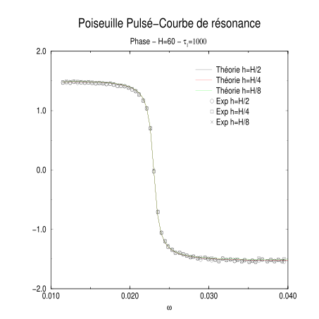
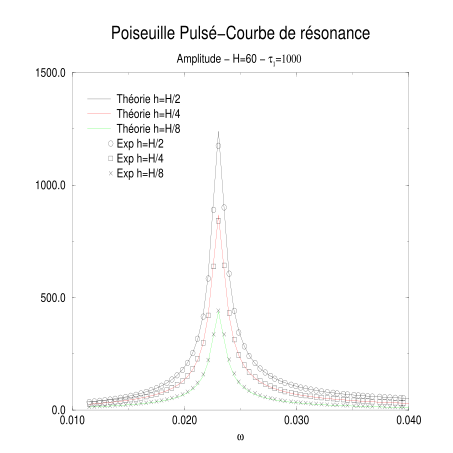
In this example, the agreement between the simulation and the analytical solution is excellent, still without any adjustable parameter. If we perform the same simulation for a wider range of angular frequency, we obtain a second resonance at \(\omega=3\,\omega_0\), even for the velocity at the center of the channel. We can also compute the error as a function of \(\omega\) and of the height in the channel; we then obtain the curve 4.9.
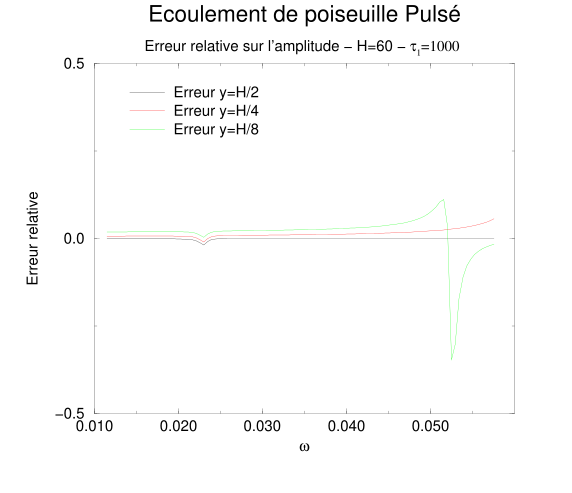
The relative error is larger for the second resonance of this flow than in the Couette flow case. This is explained first by the fact that the frequency is higher, and therefore the time derivatives of the stress or velocity are also larger. We are thus no longer in the small-gradient approximation. The second reason is the same as that observed for the Couette flow: the difficulty of waiting for the spurious noise around the resonance to disappear; the problem is in fact aggravated by the high frequency. The errors due to the walls are still present and influence the error. The last source of error is, once again, due to the presence of an additional term in the constitutive equation of our fluid with respect to the Jeffreys fluid, although its effects are very limited.
This study allows us to validate once again the Jeffreys-fluid hypothesis as well as the way we introduce a body force. It also warns us about the small-gradient hypothesis and shows us the limits of the model at high frequencies.
4.4 Flows based on Couette flow
We will now carry out two flows that highlight transient effects. Based on the Couette flow, we will study the responses of our fluid to the establishment of the motion of the moving plate, then to its stop, and finally we will study its response when the plate undergoes a sudden motion. The theoretical calculations on these three experiments are done under the assumption that the fluid feels instantaneously and uniformly the effects of the motion of the plate throughout its volume. We will attempt to approach these assumptions as closely as possible in the simulations that follow, by a trick, since it is clearly evident from all we have just shown that information propagates in the fluid with a finite speed, whether transverse or longitudinal.
4.4.1 Establishment of a shear
Take the Couette device at rest; then at \(t=0\) we impose a constant velocity \(V_0\) on the lower plate. We can mathematically represent the motion of the plate by a Heaviside function multiplied by a constant, i.e.: \(V_0\,H(t)\). So that the fluid feels the motion of the plate, we will impose on it the velocity of an established Couette flow at every point from \(t=0\), without touching the other modes of the system; by other modes we mean the modes which do not enter directly into the establishment of the shear. Thus, the shear of the fluid will indeed be numerically represented by a Heaviside-type function \(H(t)\), as shown in figure 4.10. Note that in the case of a linear fluid, the shear \({\dot D}_{xy}\) is the only non-zero component of the strain rate tensor; it can then be identified with one of its invariants, \({\dot \gamma}\), when one adopts the convention \({\dot D}_{xy}>0\). If the Couette channel has a height \(H\), we then have in steady state: \[\begin{equation} {\dot D}_{xy}^0={\dot \gamma}_0={V_0 \over H}. \end{equation}\]
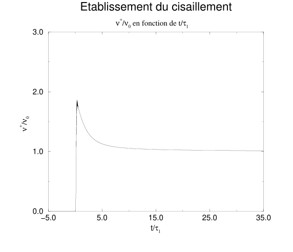
We then numerically measure the dimensionless quantity \(\sigma_{xy}/({\dot \gamma}_{0}\,\nu_0)=-\nu^+/\nu_0\), which we report on the graph in figure 4.11 as a function of the dimensionless time \(t/\tau_1\). The quantity \(\nu^+\) is defined by: \[\begin{equation} \sigma_{xy}=- {\dot \gamma}\,\nu^+. \end{equation}\]
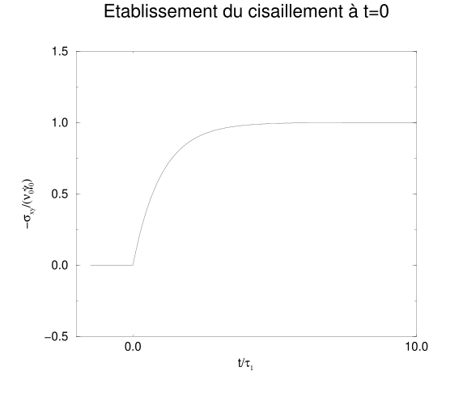
We can then plot the graph of the error on the stress with respect to the theoretical value for a Jeffreys-type fluid: \[\begin{equation} -{\sigma_{xy}\over {\dot \gamma}\,\nu_0 }={\nu^+\over \nu_0}=1-\left(1-{\nu_\infty\over \nu_0}\right)\,e^{-{t / \tau_1}}. \end{equation}\] One can then observe that the minimum error is obtained with the choice: \[\begin{equation} \tau_1=\left({1\over \lambda_\gamma}-{1\over2}\right). \end{equation}\]
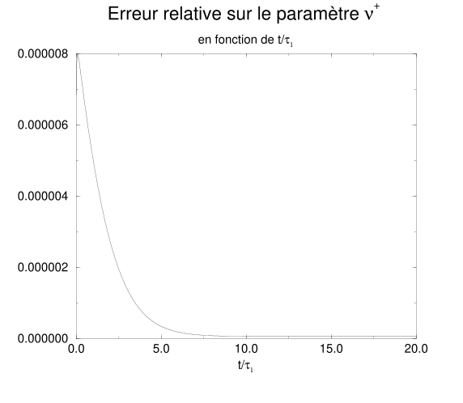
One can then see in graph 4.12 that the error is extremely small. This simulation thus allows us to define the relaxation time \(\tau_1=1/ \lambda_\gamma- 1 /2\) of our models. It nevertheless remains acceptable to take \(\tau_1=1/\lambda_\gamma\) since by definition \(\lambda_\gamma\ll 1\).
4.4.2 Shear cessation
Starting from the same Couette device as before, but starting from an established initial solution, that is, the lower plate has been in uniform motion with velocity \(V_0\) for an infinitely long time. At \(t=0\), we stop the plate and impose zero velocity throughout the fluid while keeping the value of the other modes of the system as we did previously. The shear of the fluid, \({\dot \gamma}\), can then be represented by a function of the form \({\dot \gamma}_0\,(1-H(t))\), which we recover in graph 4.13 obtained from the numerical simulation.
We also numerically measure the dimensionless quantity \(-\sigma_{xy}/({\dot D}_{xy} \,\nu_0)=\nu^-/\nu_0\) as a function of the dimensionless time \(t/\tau_1\). We report this measurement on graph 4.14.
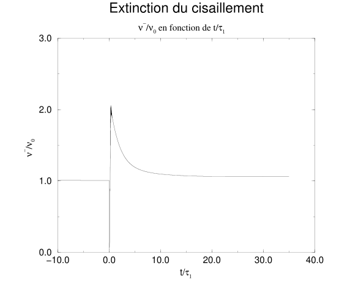
The error that can then be measured between the theoretical value and the simulation, given in figure 4.15, is again very small when making the hypothesis of a Jeffreys fluid.
Indeed, for such a fluid, we have: \[\begin{equation} -{\sigma_{xy} \over {\dot \gamma}_0\,\nu_0 }={\nu^- \over \nu_0}=\left(1-{\nu_\infty\over \nu_0} \right)\,e^{-{t\over \tau_1}}. \end{equation}\]
In this simulation, the minimum error is again obtained when: \[\begin{equation} \tau_1=\left({1\over \lambda_\gamma}-{1\over2}\right). \end{equation}\]
4.4.3 Sudden shear
In the same way as previously, but by establishing and then turning off the shear after a short time \(\delta t\), we obtain a shear resembling a Dirac function. In figure 4.16, the shear is equal to \({\dot \gamma}_0\) only at the point \(t_0=0\) and thus \(\delta t=1\).
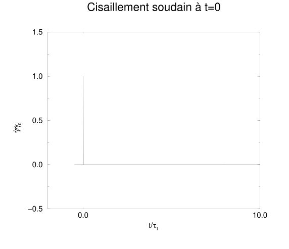
The response to such a shear is given in figure 4.17; it corresponds to the relaxation modulus \(G(t)\) defined for a Jeffreys fluid by: \[\begin{equation} G(t-t_0)=\mu_0\left(1-{\tau_2 \over \tau_1} \right)\,e^{-(t-t_0)/\tau_1} + 2 {\mu_0\,\tau_2 \over \tau_1}\,\delta(t-t_0). \end{equation}\]
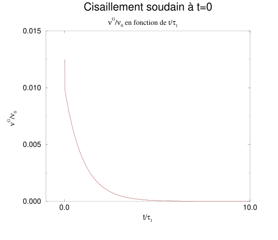
The error on this simulation is, once again, very small. Figure 4.18 shows the relative error as a function of the reduced time \(t / \tau_1\).
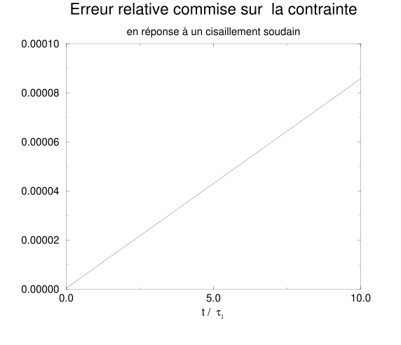
In conclusion, the set of the three previous simulations, namely the establishment of a shear, the cessation of a shear, and the establishment of a shear during a short period, has allowed us to define the transient viscosities of our numerical model. We could then verify that they corresponded to the transient parameters of a Jeffreys fluid. We determined that the relaxation time of our fluid is given by \[\tau_1=\left({1\over \lambda_\gamma}-{1\over2}\right).\] However, since this time is very long, typically of the order of \(10^3\), the correction \(-1 /2\) due to the presence of a discrete lattice does not bring a significant contribution.
References cited in this chapter
- [40] L. Landau and E. Lifchitz, “Mécanique des fluides”, Edition MIR, Moscou, (1971) ↗